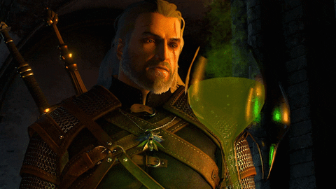
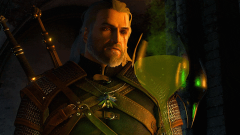
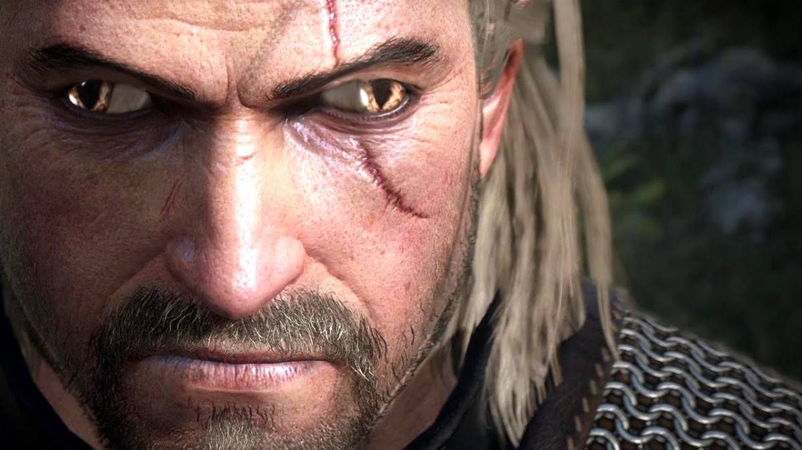

Geralt Of Rivia(Geralt de Riv)
-> Le mal est mal, petit,grand,moyen... ça ne fait aucune différence.
Cette notion
est subjectve, les définitions sont fleues. Si je devais choisir
entre deux maux... je préfèrerais ne
rien choisir du tout." -Geralt Of Rivia
Le célèbre Sorceleur, Geralt de Riv, remarqua qu'il se passait quelque chose d'étrange
dans une ferme du Duché de Toussaint, son médaillon pendu à son cou alors qu'il s'approchait.
Il calma son cheval et se prépara à entrer, emportant avec lui son épée d'argent, son
épée d'acier et quelques types d'huile d'épée dans ses épées, ainsi qu'une potion ou deux qui pourraient être
utiles.
il y avait un appareil pris dans son œil lorsqu'il est entré, il s'est rendu compte que de la magie émanait de
l'appareil, qui n'appartenait évidemment pas à cette époque,
et le propriétaire de cet endroit a arrêté
notre célèbre Witcher, dont le médaillon tremblait à son approche.

"S'il vous plaît, Lord Witcher, n'entrez pas là-bas, celui qui est entré n'est jamais revenu."
"Savez-vous ce que c'est ?" demanda le sorceleur.
Propriétaire du lieu : "Je suis désolé mais je ne sais pas, tout ce que je sais c'est que la personne qui l'a
produit s'est mise dedans et s'est perdue."
Alors que le sorceleur n'était pas satisfait de la réponse, son attention fut attiré par le grand tube sur le
côté de lui, et il y avait quelqu'un à l'intérieur,
il tourna la tête pour demander au propriétaire des
lieux, mais il avait soudainement disparu.
 
Notre sorceleur a décidé d'entrer, bien sûr, car il ne savait pas ce qui allait se passer, il a demandé à son
amoureuse Yennefer qui avait une bonne compréhension de ces choses ce que cela pouvait être. Malheureusement,
lorsqu'elle n'y avait aucun idée , il a décidé d'entrer, au moins pour retrouver les personnes qui sont parties
et qui ne sont pas revenues. De la nourriture pour toute l'année, des produits alchimiques à utiliser en
alchimie, et bien sûr portant l'armure de l'école du loup, un cadeau du légendaire Vesemir, il a écrit :
"Ne vous fâchez pas contre moi avant que je revienne..."

Notre sorceleur a décidé d'entrer, bien sûr, car il ne savait pas ce qui allait se passer, il a demandé à son
amoureuse Yennefer qui avait une bonne compréhension de ces choses ce que cela pouvait être. Malheureusement,
lorsqu'elle n'y avait aucun idée , il a décidé d'entrer, au moins pour retrouver les personnes qui sont parties
et qui ne sont pas revenues. De la nourriture pour toute l'année, des produits alchimiques à utiliser en
alchimie, et bien sûr portant l'armure de l'école du loup, un cadeau du légendaire Vesemir, il a écrit :
"Ne vous fâchez pas contre moi avant que je revienne..."

Le sorceleur est entré dans l'appareil et a soudainement eu l'impression que son corps fusionnait avec
quelqu'un...
Il s'est vite rendu compte qu'il était entré dans le monde moderne et a exprimé sa surprise comme suit :
-Je pensais que Ciri se moquait vraiment de moi...